Streamplace で Gogh 作業配信を行う

前回の最後の方で「Streamplace を使うことを考えてみようかな」と書いたが，実際に試してみることにした。 なお gogh のゲーム画面を動画配信サイトに乗せるのは基本的に OK のようだが，制作会社からガイドラインが示されているので，それに従う必要がある。
Streamplace とは
Streamplace は分散型 SNS 向けのビデオレイヤおよびオープンソースのライブビデオ配信プラットフォームで AT Protocol (Authenticated Transfer Protocol) エコシステム下で構築されているのが特徴らしい。
Kagi Assistant に Streamplace と YouTube の比較表を作ってもらった（YouTube 以外の動画配信サービスでも似たようなものだろう）。
| 比較項目 | Streamplace | YouTube |
|---|---|---|
| 運営形態 | 分散型（特定の企業に依存しない） | 中央集権型（Google が運営） |
| 基盤技術 | AT Protocol / Livepeer ネットワーク | Google 独自のクローズドなインフラ |
| ソースコード | オープンソース（誰でも利用・改善可能） | 非公開（プロプライエタリ） |
| データの所有権 | ユーザー自身（自己主権型アイデンティティ） | 運営企業（Google） |
| 主な目的 | 分散型 SNS 向けのビデオインフラ提供 | 広告収益を主とした動画共有サービス |
| 検閲・制限 | プロトコルレベルでの検閲は困難 | 運営企業のポリシーにより削除・停止あり |
| 主な利用者層 | Web3 開発者，分散型 SNS ユーザー | 一般消費者，クリエイター，広告主 |
だいたい合ってるかな。
Streamplace および基盤技術である Livepeer については別記事でもう少し掘り下げて紹介する。 まずは（細かいことは考えず）アカウントを取得するところから始めよう。
Streamplace 側の準備
公式サイトのトップページの右上にある Sign Up をクリックする。
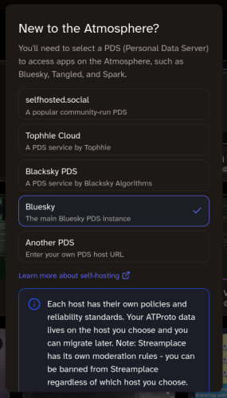
サインアップには Bluesky などのアカウントが必要らしい。 アカウントを入力して（上の図では隠れているが）下の方にある Continue をクリックすると OAuth の認証画面になるので確認して承認すればサインアップは完了。
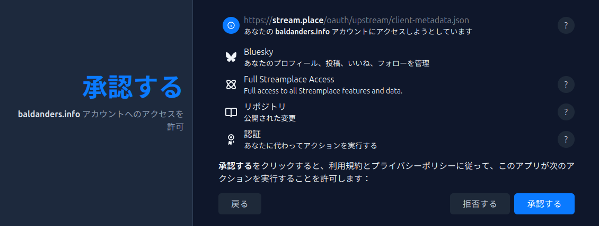
{kind=link}
ドメイン等をきちんと確認すること。
サインアップ（あるいはサインイン）したら Live Dashboard に移動する。
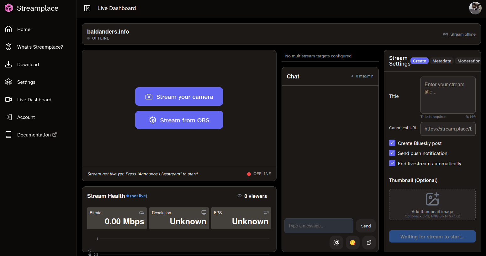
Live Dashboard
ここで Stream from OBS をクリックする。
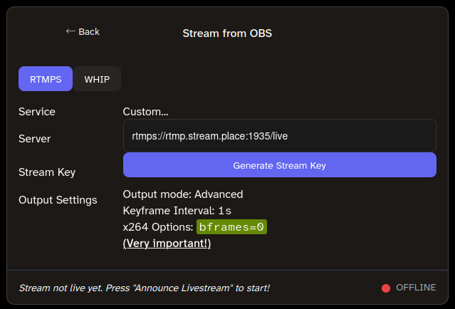
Stream from OBS
プロトコルは RTMPS を選択。 この状態で Generate Stream Key をクリックする。
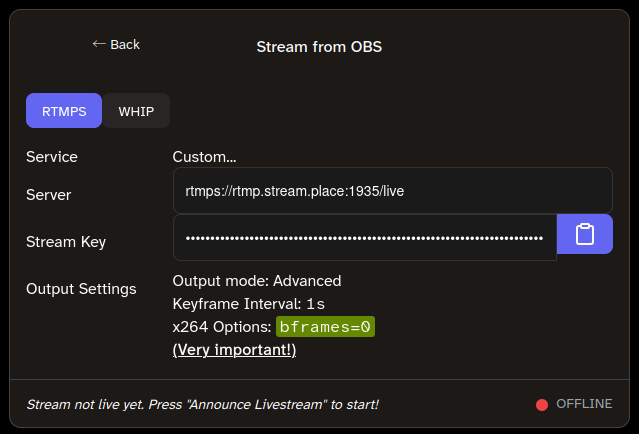
Stream from OBS
Stream Key が伏せ字で表示されるので右側のボタンをクリックしてクリップボードにコピーする。
OBS 側の設定に必要なので以下の情報はどこかにメモっておこう。
- Service： Custom…
- Server：
rtmps://rtmp.stream.place:1935/live - Stream Key： 上で取得した値
- Output Settings
- Output Mode： Advanced
- Keyframe Interval： 1s
- x264 Options：
bframes=0
OBS Studio 側の準備と配信の開始
当然ながら gogh はあらかじめ起動しておいてね。
OBS Studio のインストールおよびシーンやソースの設定については割愛する（前回記事の後半でもちょこっと説明している）。 各自でいい感じに設定して欲しい。
配信設定については，設定（Settings）画面を表示し配信（Stream）タブで，上の情報を参考に，以下のように設定する。
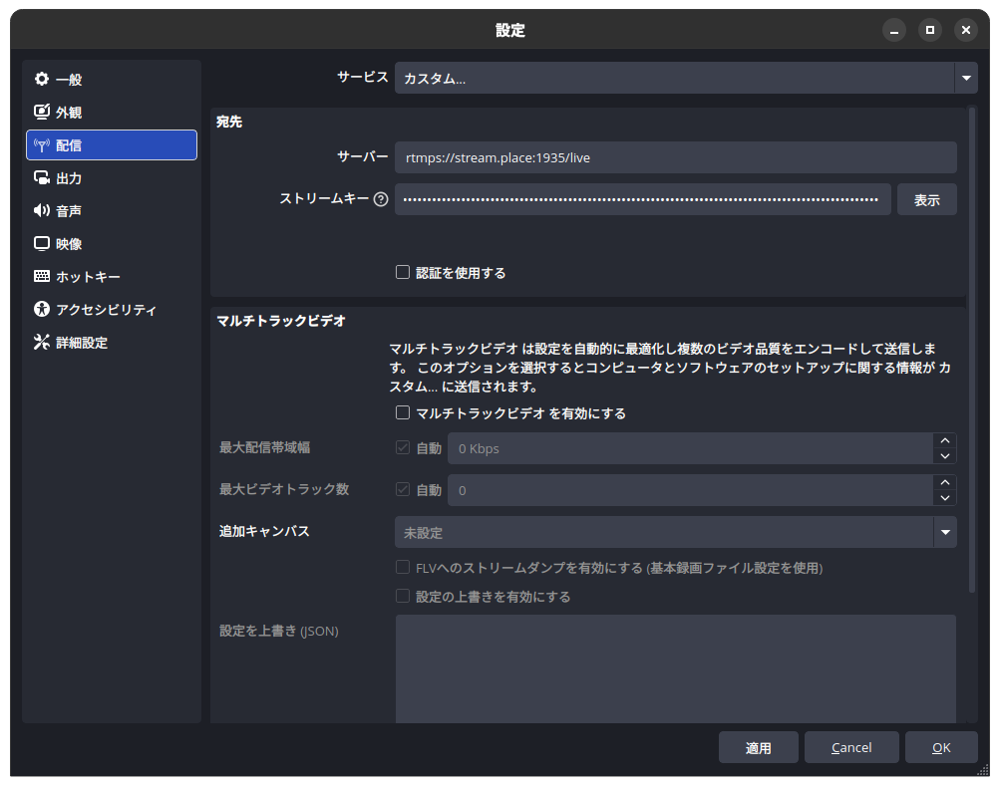
{kind=link}
さらに出力（Output）タブでも，以下のように設定する。
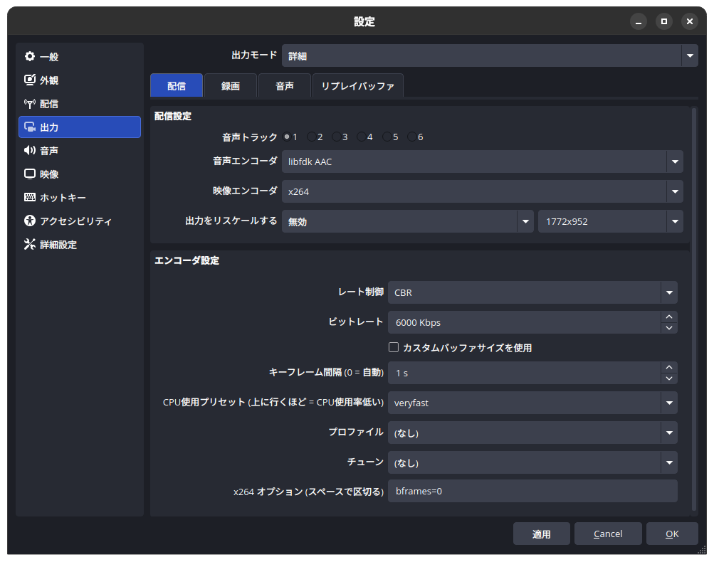
{kind=link}
これであとは Start Streaming ボタンを押せば Streamplace 側に配信が流れる。 Streamplace の Live Dashboard が以下のような状態になっていれば OK（まだプレビュー状態）。
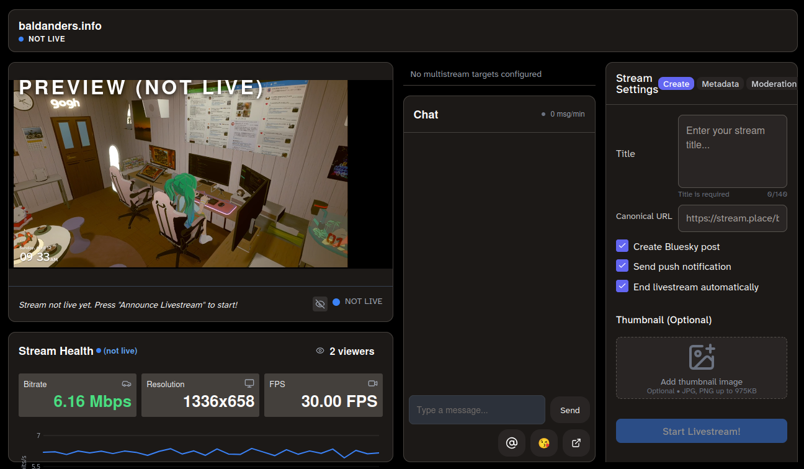
Live Dashboard
タイトル等を入力して Start Livestream! をクリックすれば配信が開始される。
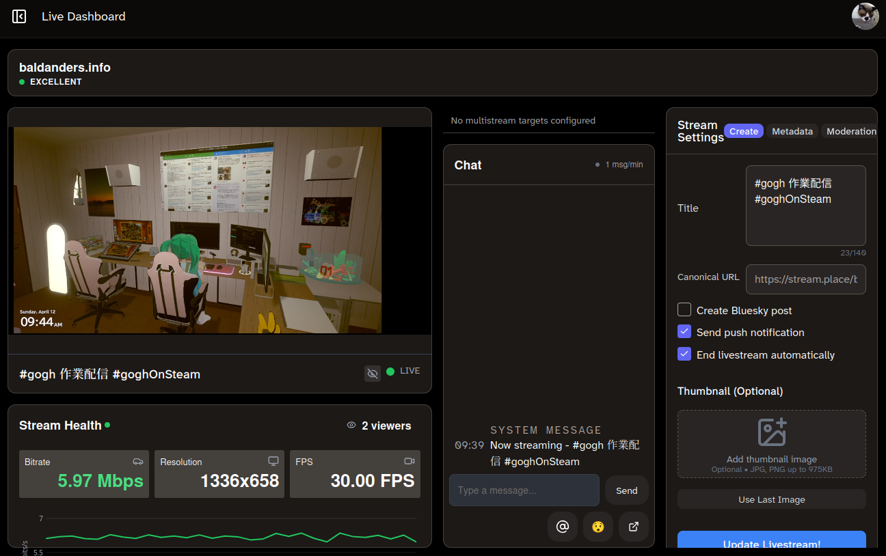
Live Dashboard
ちなみに，最近の Bluesky はライブ中フラグを立てることができる。
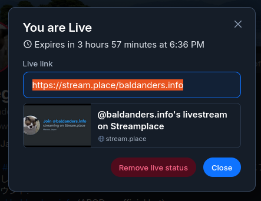
{kind=link}
Edit live status
ライブ中状態にすると以下のようにアバターアイコンに赤枠が付く。
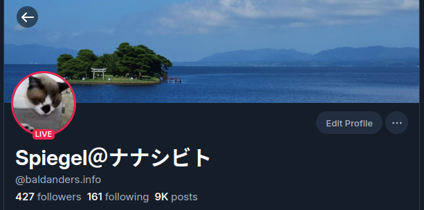
Profile
スマホ用アプリ
Streamplace の配信は Web ブラウザで見れるが，スマホ用のアプリも提供されている。
Android だとこんな感じ（横持ちの場合）。
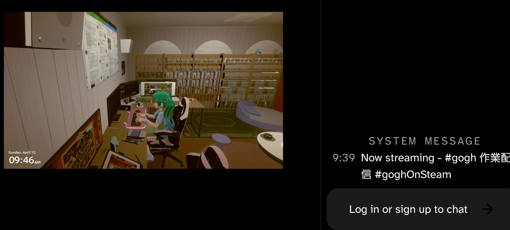
Streamplace App
見るだけならサインインしなくても OK なようだ。 これならスマホ版の gogh は要らんな（笑） 配信1 仕掛けてポモドーロ・タイマーを起動しておけば出先でも使えるぢゃん。
…後半へ続く。
-
Streamplace 配信は特定のユーザにだけ見えるようにすることもできる。勘違い。 gogh の限定公開機能と混同していた。 ↩︎